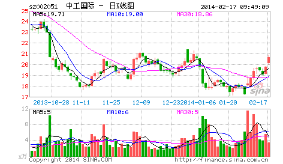

为管理层对N中工走势的回应热烈鼓掌！
2006/6/20 11:51:24

如今盛行网络舆论暴力，最近那闹得沸沸扬扬的某事件只不过一个很普通的事例。昨天N中工走势引发网络暴民一阵喧嚣，本ID不愿意看到这种暴力哲学得逞，收市后马上写了“鄙视所有对N中工15元不敢买50元就吃醋的人！”，里面强烈呼吁必须以法律和现行规则来评价该走势，不能重回诸如327之类的老路。
本ID从来不爱对管理层说什么好话，从来觉得对管理层应如小孩般，多多斥责才会有进步。以前唯一一次大力为管理层鼓掌是去年公布股改大跌那最腥风血雨时，连续三个帖子对管理层下大决心解决问题的态度大力鼓掌，而今天，必须再次为管理层鼓掌，为的是其对N中工走势的回应：深交所称中工国际表现属于正常，不会进行调查。
首先，由交易所而不是证监会来回应这事，符合规则。对一个股票的一天走势这么小的事情，如果都要动用证监会，那就像小孩玩泥沙这么小的事情都要告法院一样无聊。其次，表现属于正常，这是一个规则可以检验的概念，只要符合买卖规则，资金上有没有出现过度集中的异常情况，任何走势都是应该被允许的。最后，从这事情可以看出，现在的管理层已经越来越成熟，而现在的很多所谓股民，还是相当不成熟，为一点芝麻小事就一惊一咋的，惹人笑话。
至于N中工其后怎么走，就更是市场化的事情，管理层当然就更不应该太多干预，这次N中工为其后的监管提供了一个最好的榜样，希望能继续发扬，这样中国资本市场才会少闹点笑话。
回复